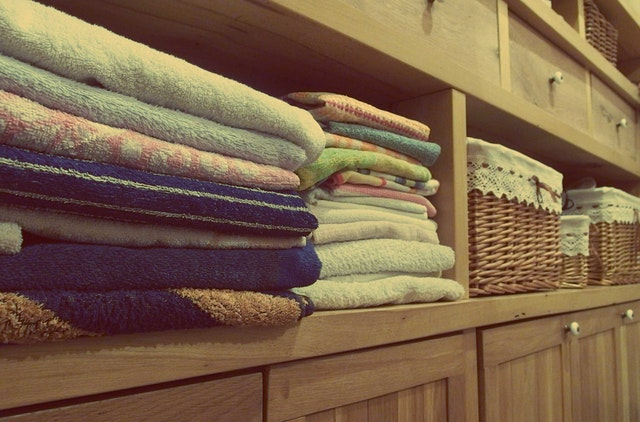
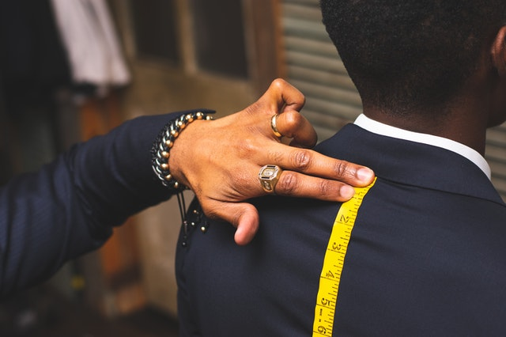

Services

Delivery Service
Sign Up for our delivery service and get your clothes delivered right to your door!

Dry Clean
GO Dry-Cleaning combines classic craftsmanship with innovative, environmentally safe dry cleaning processes. Our professionals take personal pride in treating your clothes with the utmost care so finished garments are strikingly clean, comfortably soft and a pleasure to wear.

Laundry
Our shirt specialists carefully inspect each shirt for stains and missing, cracked or broken buttons, which are replaced at no charge, and take extra care cleaning your collars and cuffs. Every shirt is starched and pressed to your precise preference and delivered either on hangers or neatly folded and boxed.

Wash and Fold
No more trips to the laundromat to use commercial-sized washers on your large blankets and bedspreads! We are proud to deliver a much more thorough and reliable cleaning of these oversized and delicate household cloth items with competitive pricing and superb customer service.

Alterations
Our alteration experts can hem and taper dresses, skirts and trousers. We can resize the waist on all clothing. We can replace zippers, mend seams, and apply patches. All alterations are done according to your measurements.
Household Items
Our trusted professionals handle your items with care. In addition to our quality dry cleaning services, we are proud to provide cleaning services for a wide variety of other cloth household items. We have the specialized equipment, knowledge, and experience necessary to carefully and thoroughly clean and restore your items, even if they are large or delicate.